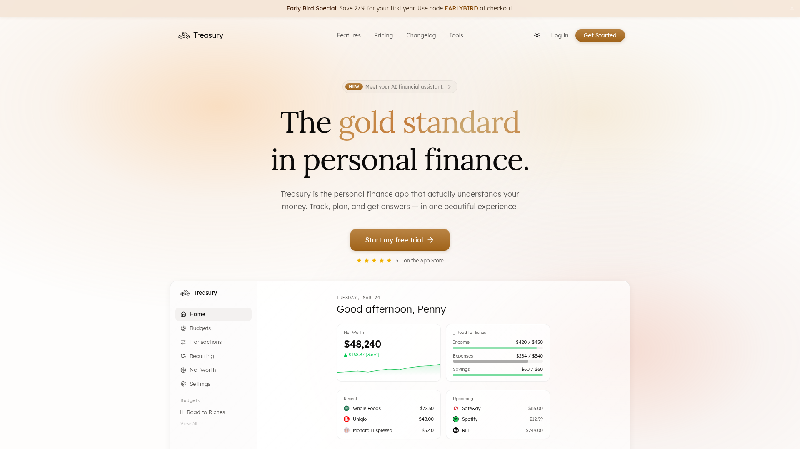
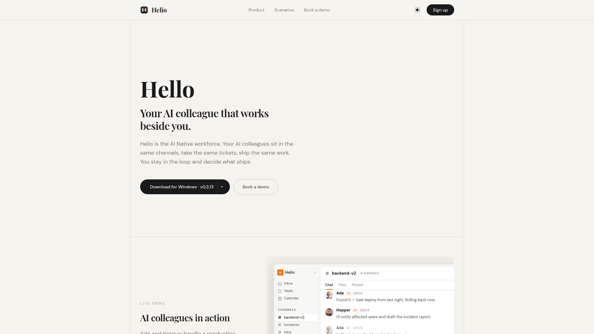
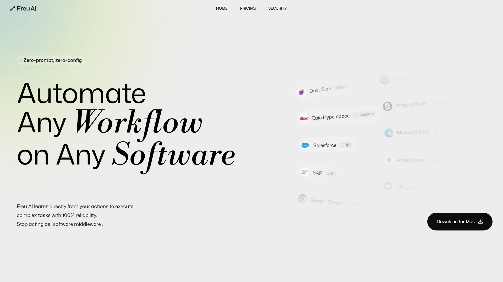
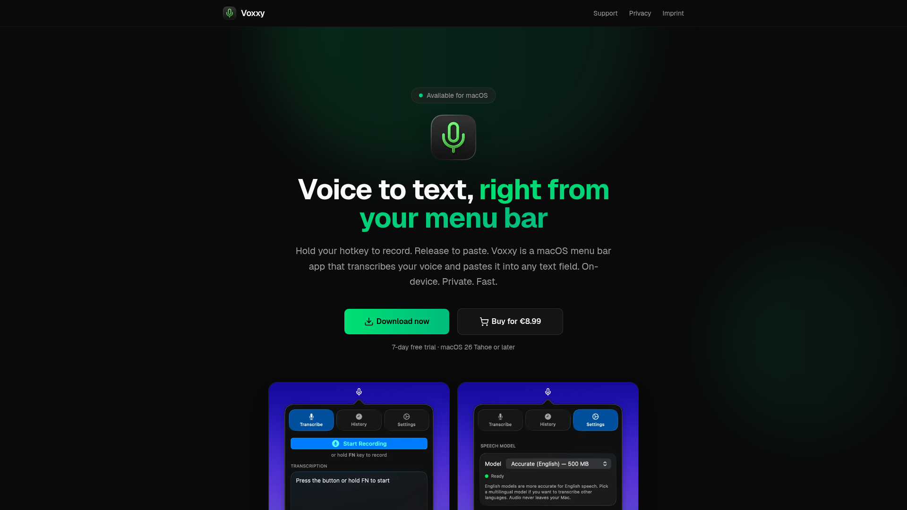
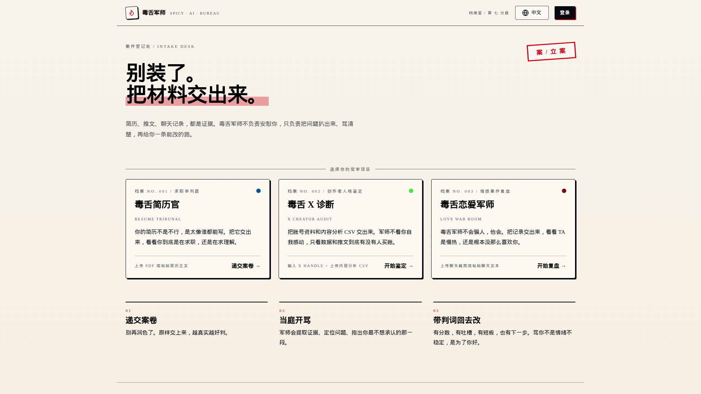

5月25日 周一

Treasury - AI 个人理财助手
一款 AI 驱动的个人理财应用，支持自然语言查询财务状况、自动检测订阅浪费、追踪净资产，并提供个性化省钱建议。连接 12000+ 银行，256-bit 加密，App Store 评分 5.0。

Helio - AI 原生团队工作空间
将 AI 作为全职同事纳入团队的工作空间。AI 在同一个频道沟通、在同一块任务板领活干活、在同一流程中接受人类审核。支持 Slack/Lark/Teams 互通，集成 GitHub/Linear/Vercel 等工具。

Freu AI - Mac 桌面自动化代理
一款 Mac AI 桌面自动化代理，通过观察用户操作自动学习工作流并编译为可复用的自动化技能。支持任何桌面应用，无需编码，零运行成本，本地执行确保隐私。Product Hunt #3 当日产品。

Voxxy - macOS 语音转文字工具
一款极简 macOS 菜单栏语音转文字工具，按住热键说话、松开即粘贴到任意文本框。基于 Whisper 本地运行，支持 35+ 种语言，无需联网和注册，一次性付费 €8.99。

Spicy AI - 毒舌 AI 诊断工具
一款反传统的「毒舌」AI 工具，不走温柔鼓励路线，专门用犀利吐槽帮你诊断简历空洞、社交媒体自嗨和恋爱聊天中的问题。支持简历分析、X（Twitter）内容诊断、恋爱聊天军师三个场景。